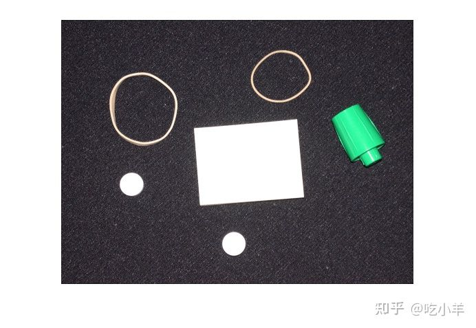
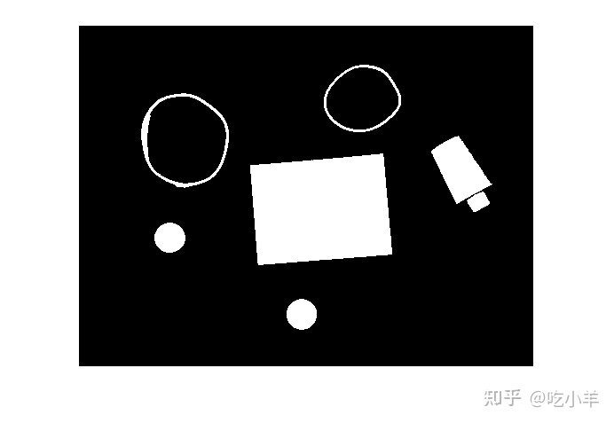
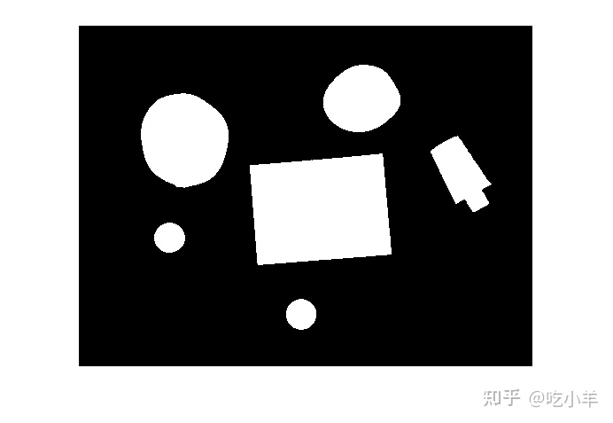
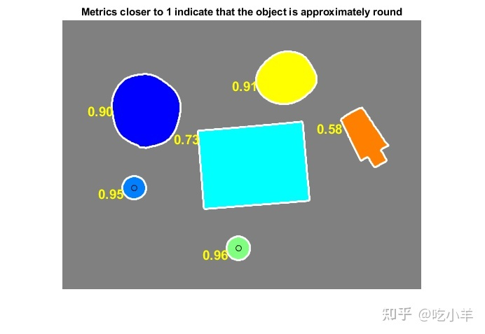

Home
本示例说明如何使用边界跟踪例程bwboundaries，根据对象的圆度对对象进行分类。
第 1 步：读取图像
读入pills_etc.png。
RGB = imread('pillsetc.png');
imshow(RGB)

步骤 2：设置图像阈值
将图像转换为黑白，以准备使用bwboundaries跟踪边界.
I = rgb2gray(RGB); bw = imbinarize(I); imshow(bw)
第 3 步：消除噪音
使用形态学函数，删除不属于感兴趣对象的像素。
删除包含少于 30 像素的所有对象。
bw = bwareaopen(bw,30); imshow(bw)

填补笔帽的空隙。
se = strel('disk',2);
bw = imclose(bw,se);
imshow(bw)
填充任何的空洞，以便可以使用 regionprops 来估计每个边界所包围的面积：
bw = imfill(bw,'holes'); imshow(bw)

第 4 步：找到边界
只关注外部边界。选项“noholes”将通过防止bwboundaries搜索内部轮廓来加速处理。
[B,L] = bwboundaries(bw,'noholes');
显示标签矩阵并绘制每个边界。
imshow(label2rgb(L,@jet,[.5 .5 .5]))
hold on
for k = 1:length(B)
boundary = B{k};
plot(boundary(:,2),boundary(:,1),'w','LineWidth',2)
end
步骤 5：确定哪些对象是圆形的
估计每个对象的面积和周长。使用这些结果形成一个简单的指标来表示物体的圆度：
metric = 4 * pi * area/perimeter/perimeter
该度量仅对于圆形等于 1，对于任何其他形状都小于 1。判别过程可以通过设置适当的阈值来控制。在此示例中，使用 0.94 的阈值，以便仅将药丸归类为圆形。
使用regionprops以获得所有对象的区域的估计。请注意， bwboundaries返回的标签矩阵可以被regionprops重用。
stats = regionprops(L,'Area','Centroid');
threshold = 0.94;
% loop over the boundaries
for k = 1:length(B)
% obtain (X,Y) boundary coordinates corresponding to label 'k'
boundary = B{k};
% compute a simple estimate of the object's perimeter
delta_sq = diff(boundary).^2;
perimeter = sum(sqrt(sum(delta_sq,2)));
% obtain the area calculation corresponding to label 'k'
area = stats(k).Area;
% compute the roundness metric
metric = 4*pi*area/perimeter^2;
% display the results
metric_string = sprintf('%2.2f',metric);
% mark objects above the threshold with a black circle
if metric > threshold
centroid = stats(k).Centroid;
plot(centroid(1),centroid(2),'ko');
end
text(boundary(1,2)-35,boundary(1,1)+13,metric_string,'Color','y',...
'FontSize',14,'FontWeight','bold')
end
title(['Metrics closer to 1 indicate that ',...
'the object is approximately round'])

======================================================================
我的测试结果及程序
下面是我测试的代码：

注：本文根据MATLAB官网内容修改而成。